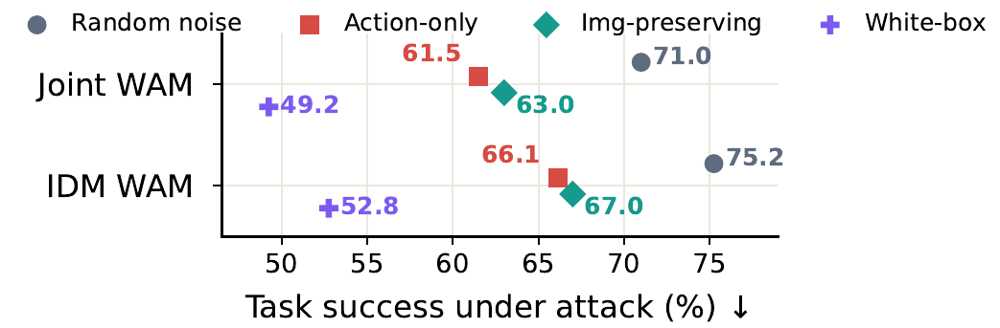
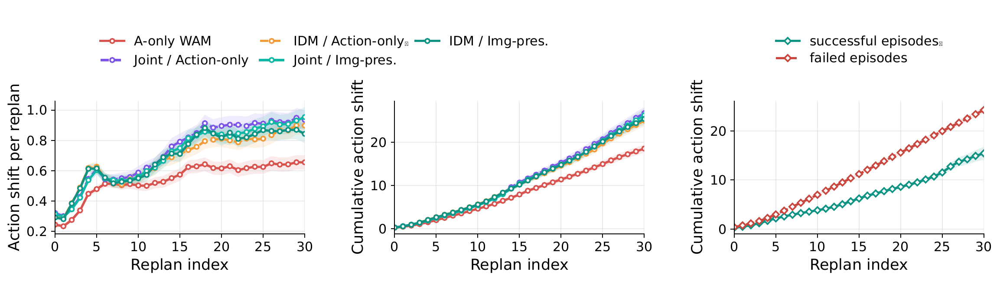
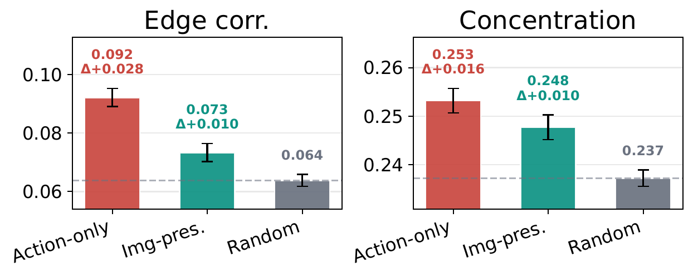
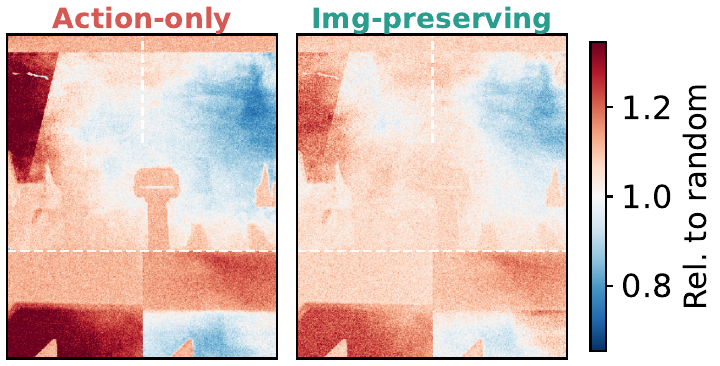
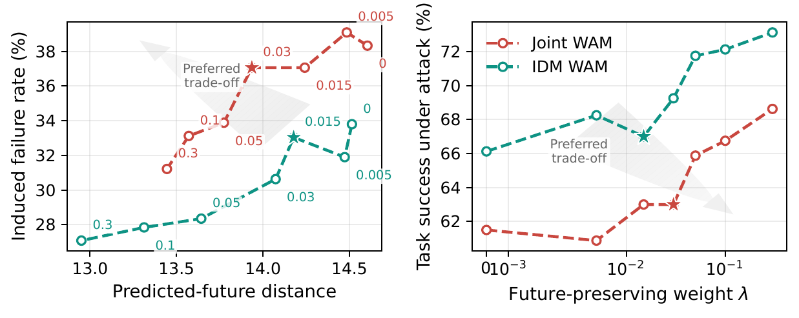

Action-only adversarial attack
Maximize the deviation between clean and attacked action chunks. It uses only action outputs and represents the high-strength endpoint of the attack surface.
Project page · Preprint
1National University of Singapore · 2The Hong Kong Polytechnic University · †Corresponding author
BadWAM exposes a WAM-specific security gap: a bounded visual perturbation can shift the executed action while leaving the model's imagined future comparatively plausible.
Abstract
World-action models (WAMs) couple action generation with future world prediction, a design often viewed as a source of robustness, interpretability, and safety. BadWAM challenges this assumption by introducing World-Action Drift Attacks: WAM-specific adversarial attacks that use small visual perturbations to break the alignment between what a WAM imagines and what it executes.
BadWAM studies two points on the attack-strength/stealthiness spectrum. The action-only adversarial attack maximizes execution disruption, while the imagination-preserving adversarial attack considers not only disruption but also stealthiness.
Method
The threat model is inference-time and black-box: the attacker can intercept the visual input, query the WAM, and replace the input with a perturbation bounded by an ℓ∞ budget, but cannot change the instruction, robot state, environment, model weights, or training data.
Maximize the deviation between clean and attacked action chunks. It uses only action outputs and represents the high-strength endpoint of the attack surface.
Shift the action while penalizing predicted-future drift. The result is a stealthier failure for systems that expose futures to monitors or planners.
Use zeroth-order finite-difference queries at every replan. Small structured action shifts can accumulate into task failure over the execution horizon.


Main results
Values below are the main full-benchmark results from the updated paper. Each LIBERO cell covers 40 tasks × 20 trials; each RoboTwin cell covers 50 tasks × 20 trials. Arrows show clean → action-only attack, with imagination-preserving results listed after the slash where available.
Clean → action-only attack.
Clean → action-only / imagination-preserving.
Clean → action-only / imagination-preserving.
Clean → action-only attack.
Clean → action-only / imagination-preserving.
Clean → action-only / imagination-preserving.



Analysis







Safety implications
The updated results show why an imagined future should not be treated as a complete safety certificate. An attacker can target the action-imagination interface: the executed action chunk shifts enough to fail the task even when the predicted future remains comparatively stable.
The vulnerability also transfers across WAM variants. Transferred attacks are only 2.0–4.7 percentage points weaker than attacks optimized directly on the target across the five reported directions. The paper evaluates these task-failing attacks in simulation rather than on physical robots, because their consequences cannot be safely bounded in advance.
Qualitative examples
Videos compare clean and attacked closed-loop rollouts on representative LIBERO tasks.
Citation
@article{li2026badwam,
title = {BadWAM: When World-Action Models Dream Right but Act Wrong},
author = {Li, Qi and Yang, Xingyi and Wang, Xinchao},
journal = {arXiv preprint arXiv:2607.15207},
year = {2026}
}